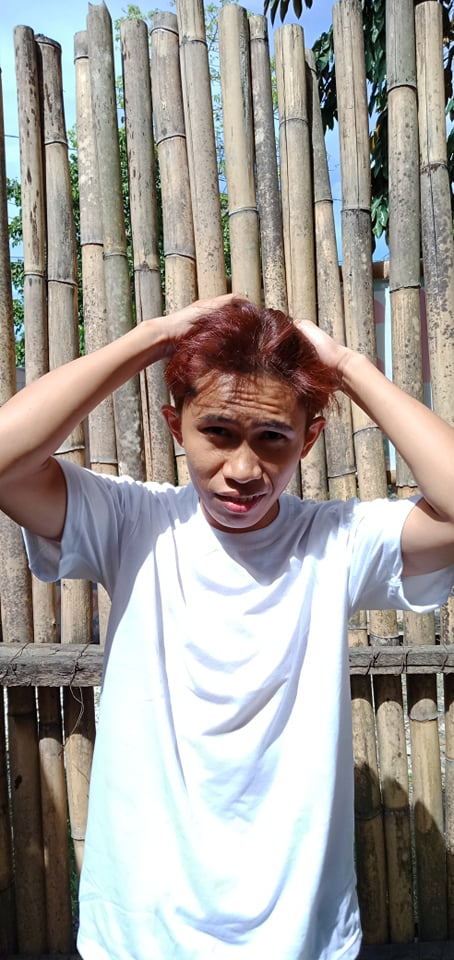
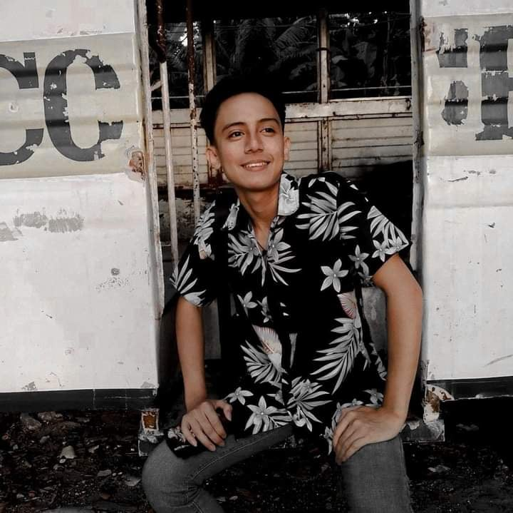
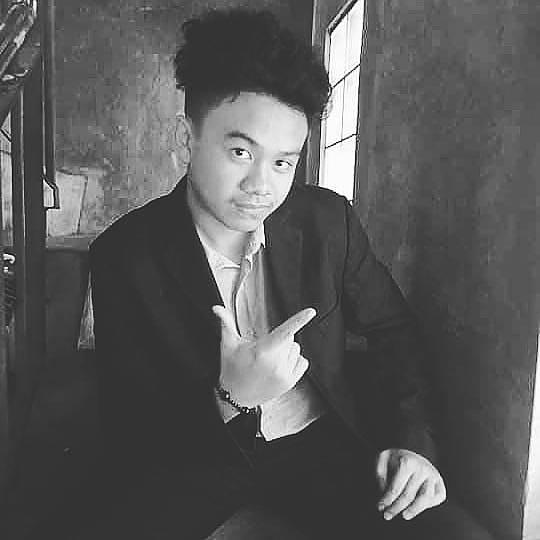
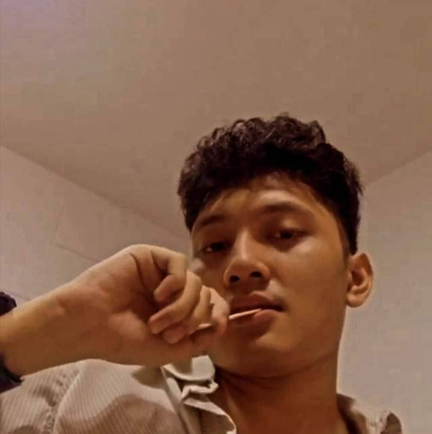
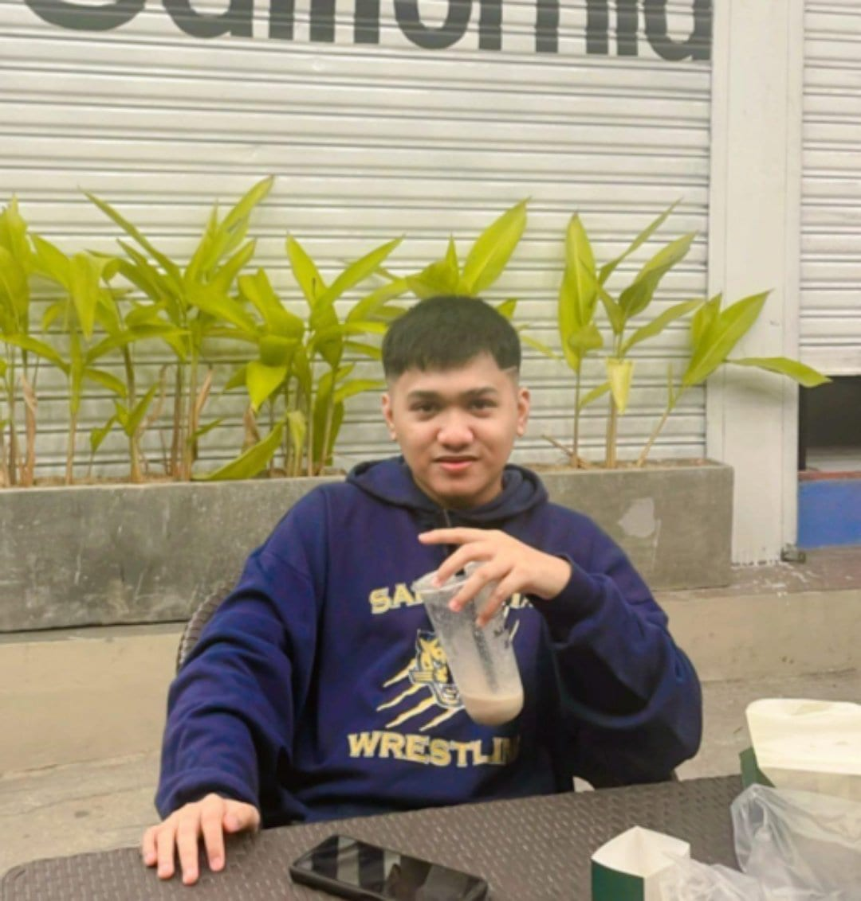
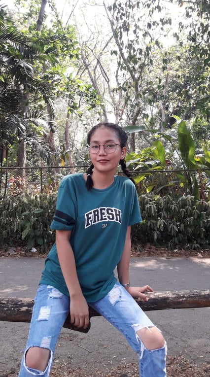
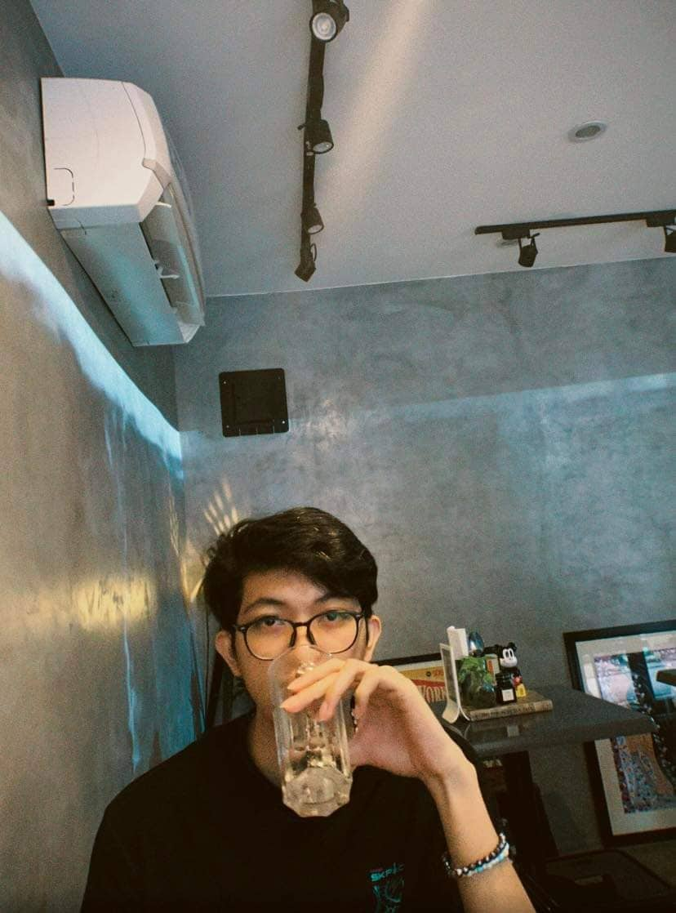

About Us
Digital Library and Online Social Reading is a socal reading platform that aims to connect people who is interested in reading or writing a book. The website let the user to choose their favorite books and read it for later. For users who aim to be a successful writer or just want to share a story to the platform is perfect for those person. The platform allows users to write and publish stories and be read by other users.
It's an electronic or online library where one can have access to books,journals,novels,articles,or any other information over net. Either general reader or a research scholar may have access to a number of e-libraries sitting at home itself.
An ordered collection of heterogeneous electronic documents (including books) equipped with a navigation and search tool. It can be a website where various texts are gradually accumulated (more literary, but also any others up to computer programs) and media files, each of which is self-sufficient and at any time can be in demand by the reader. Electronic libraries can be universal, seeking to the widest choice of material (as a library Moshkova or Librusk), and more specialized, as a fundamental electronic.
Meet our team
System Design
Orilla, Joshua
Joshua is the one of the designers of the system e- read.
He is a 20 years old IT Student in QCU. In his spare time,
Joshua enjoys playing online games, basketball and etc.
Estupa, Robert
Robert Estupa is currently studying in quezon city university Toledo, John Aerol
as a BS information technology and my role in our system is
interface designer and my hobby is to play video games as well basket ball

I am John Aerol Toledo, 22 years old. Currently residing in Quezon City, Maliwat, Whacky
and a Bachelor of Science in Information and Technology student.
I enjoy playing online games spending my time with friends,
and sometimes playing basketball.

Whacky who makes the UI of system and polish it. Villa, Charles Johann
In his spare time he reads lightnovels,play games in his computer,
do gym, do diet, and sleep.

Charles is currently a 2nd year college student in QCU Cortiguera, Mylene Grace
and takes a BSIT course. He has basic knowledge in html and css,
and he is one of the designers in E-read.
His hobby is playing video games and watching movies.
Mylene Grace G.Cortiguiera, graduated senior highschool in
Caloocan City Bussiness High School,
she take ABM in her Senior High.
She enjoys playing volleyball and
she's always go with the flow of her surrounding.
Programmers

Yecyec, Jason
Jason Yecyec, studied senior high school at STI College cubao, Rivas, Kenzo
he took coding seriously during pandemic by taking online courses in udemy and
do some personal projects, he decided to pursue web development
as a career path with the goal of becoming a full stack developer someday.
He likes to work out, watch movies, anime, and play video games in his spare time.
Breaking Bad and Game of Thrones are his favorite television shows,
while his favorite book is James Clear's Atomic Habits.
Edward Kenzo Rivas graduated senior high school at STI Novaliches, Naranja, Rovin
He completed the Information Technology in Mobile App and Web Development track,
He enjoys playing computer games,
different genres of anime and music.

I am Rovin S. Naranja, Graduated at Montessori Professional College of Asia Bonita, Kenneth
in my Senior High school in strand of Information Technology.
I know how to code a little of CSS and HTML and I'm still practicing it til now,
my main hobby is playing guitar as well as fixing Android phones system.

My name is Kenneth D. Bonita studied Bachelor of Science in Information Technology. Omega, Aeron Jay
Got interest in programming in my senior high school years.
In my spare time I love playing online games and watching anime.

Aeron was one of the co-founder of e-learn in 2022
while attending his college, Quezon City University.
He was born on October 17, 2001 in Quezon City, Philippines.
He is interested in web developing and programming and proceed on
taking BS information technology.
He enjoys playing online games and traveling.
Database

Ceron, David
John David Ceron, 19 have knowledge in fundamentals Labong, Sean
of programming and database administrator. My hobby is to listening to music,
playing games and sometimes im watching videos about codings to enchance my skills
and knowledge about programming.

My name is Sean Cleo H. Labong 19 years old studying at QCU taking Information technology. Manlangit, Jellamie
I'm the youngest among the 2. I live in Caloocan city.
My hobbies are playing online games and watching netflix when I'm bored.

Jellamie C. Manlangit, a 21 years old. Part of the Database Team. Elona, John Andrey U
An ambitious, trustworthy and driven woman.
Jellamie enjoys to play badminton and mobile games. She loves music, dog and arts.
Jellamie believes in the saying
"Live life to the fullest and focus on the positive."
Elona, John Andrey U. is a student of QCU, Jose, Mark Justin
my hobbies is about things related to phone such a customising, and etc,
and I enjoy sports such as Basketball, Badminton, and other teamsports.

Mark Justin S. Jose Student
Mark is a student in QCU and he is taking
Bachelor of Science in Information Technology.
In his spare time, Mark enjoys playing online games,
watching and biking.